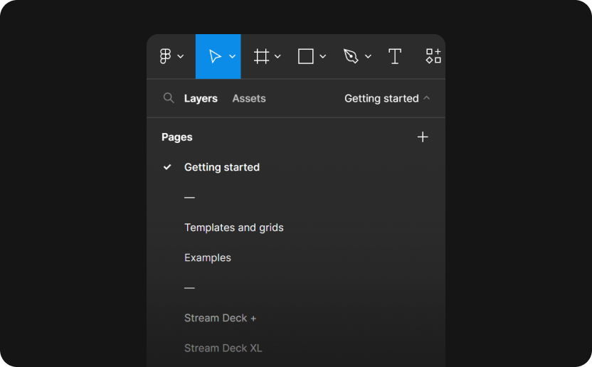

Stream Deck + Templates
Getting started
Overview
Make Stream Deck assets easier to create. We’ve created a comprehensive and
easy-to-use Figma resource that outlines specifications for Stream Deck
assets, including keys and touch strip for Stream Deck +, Stream Deck XL,
Stream Deck MK.2, and Stream Deck Mini.

Where
This file is organized by templates, examples, and device previews as pages.
Navigate pages using the Layers panel on the left (this pages is named
“Getting started”). The table of contents also outlines everything in the
file to create Stream Deck assets.

How
When browsing through all the different templates, examples, and device
previews, there are instructions on how to use them.
Use templates and grids for sizing and placing elements for your assets. These will help you ensure your assets are high quality, cohesive, and predictable when using them in Stream Deck.
Browse the many simple examples of icons and touch strip backgrounds to get a feel of how to plan and structure your design. Be as creative as you would like.
If you have some assets ready to go, try slotting them into the design previews. You can also export the device previews as PNG to use in any marketing material, especially for your Marketplace product gallery. You can find all the device previews as individual pages per device, or read about them here.
Use templates and grids for sizing and placing elements for your assets. These will help you ensure your assets are high quality, cohesive, and predictable when using them in Stream Deck.
Browse the many simple examples of icons and touch strip backgrounds to get a feel of how to plan and structure your design. Be as creative as you would like.
If you have some assets ready to go, try slotting them into the design previews. You can also export the device previews as PNG to use in any marketing material, especially for your Marketplace product gallery. You can find all the device previews as individual pages per device, or read about them here.